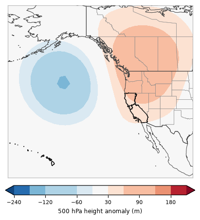

One of 6 recurring 500 hPa patterns over the eastern Pacific and western U.S. in California's fire seasons, 2001–2025 · 16% of season days

This pattern has a ridge (heights +105 m above normal) centered near British Columbia and a trough (-124 m) centered near the northeast Pacific, with higher than normal heights over California (warm, dry, sinking air).
Documented fire-weather patterns it goes with: Northern California dry thunderstorms (×1.6 as common on those days); Southern California santa ana winds (×1.6 as common on those days); Southern California dry thunderstorms (×1.9 as common on those days). How these line up with CEFA and the Synthesis of Knowledge of Extreme Fire Behavior.
Pyroconvection (seven studied California fires, 262 fire days): 2 pyroCb and 6 pyroCu days in Regime D (pyroCb days ×1.3 as common as on all study days). Which days.
The map is the average 500 hPa (~18,000 ft) height anomaly over every day assigned to this regime: red = higher than normal (ridge), blue = lower than normal (trough). Upper-level ridges bring sinking, warming, drying air; troughs bring cooler air, onshore flow and the chance of showers or thunderstorms, and the wind shifts and dry northerly flow that can follow them.
Share of each month's days (2001–2025) in Regime D.
Odds of a fire day with at least this much satellite-mapped growth, compared with the usual odds for the same time of year.
| Region | ≥1,000 ac | ≥5,000 ac | ≥10,000 ac |
|---|---|---|---|
| Northern California | ×1.36 | ×1.52 | ×1.42 |
| Southern California | ×1.08 | ×1.18 | ×1.24 |
| California | ×1.18 | ×1.32 | ×1.36 |
×1.00 = no different from usual; ×1.5 = half again as likely; ×0.6 = 40% less likely. A single 500 hPa pattern is only a modest signal on its own: lightning, wind events and fuel dryness matter a lot.
| Fire day | Acres (CA) | Largest fires that day |
|---|---|---|
| 2020-08-18 | 385,806 | HENNESSEY (LNU LIGHTNING COMPLEX) (122,577 ac), SCU LIGHTNING COMPLEX (80,440 ac), AUGUST COMPLEX (70,855 ac) |
| 2007-10-22 | 169,843 | WITCH (83,697 ac), HARRIS (41,054 ac), SANTIAGO (9,454 ac) |
| 2007-10-23 | 79,474 | POOMACHA (37,785 ac), HARRIS (14,409 ac), AMMO FIRE (9,734 ac) |
| 2020-08-17 | 78,626 | SCU LIGHTNING COMPLEX (42,149 ac), HENNESSEY (LNU LIGHTNING COMPLEX) (7,989 ac), DOME (7,403 ac) |
| 2020-09-28 | 77,828 | AUGUST COMPLEX (34,820 ac), ZOGG (15,447 ac), GLASS (14,246 ac) |
| 2021-09-07 | 72,236 | ANTELOPE (27,102 ac), HAYPRESS (RIVER COMPLEX) (25,019 ac), MONUMENT (10,326 ac) |
| 2015-09-10 | 68,997 | BUTTE (57,450 ac), ROUGH (10,616 ac), RIVER COMPLEX (680 ac) |
| 2013-08-22 | 60,593 | RIM (57,590 ac), AMERICAN (2,614 ac), CORRAL COMPLEX (289 ac) |
| 2017-12-09 | 56,189 | THOMAS (56,189 ac) |
| 2014-09-17 | 56,135 | KING (55,740 ac), MAN (JULY COMPLEX) (378 ac), HAPPY CAMP COMPLEX (17 ac) |
| 2009-08-30 | 55,468 | STATION (53,491 ac), OAK GLEN 3 (1,105 ac), PACHECO (581 ac) |
| 2020-09-18 | 52,339 | BOBCAT (27,352 ac), CREEK (10,806 ac), CASTLE (SQF COMPLEX) (5,948 ac) |
2 of the study's 9 pyroCb days formed under Regime D:
PyroCu (fire-rooted tops −20 to −40 °C) under Regime D: 6 days (August Complex, Carr, Dixie, North Complex).
Median 700 hPa moisture at the fire: 5.8 g/kg on pyroCb days, 3.2 g/kg on days with no deep plume cloud.
Under A, C or D, 700 hPa moisture at or above ~3.7 g/kg marked every studied pyroCb day (9/9) while flagging 43/186 days without deep plume cloud (fire by fire: 6/9 caught, 49/224 flagged). A pattern-level hint, weaker than the fire-power test on the pyroconvection page.
Seven studied California fires (2018–2021), GOES-classified and reviewed by eye. Pyroconvection under the scenarios.
% of all members (models weighted equally) in Regime D, by day.
| 10/17 | 10/18 | 10/19 | 10/20 | 10/21 | 10/22 | 10/23 | 10/24 | 10/25 | 10/26 | 10/27 | 10/28 | 10/29 | 10/30 | 10/31 |
|---|---|---|---|---|---|---|---|---|---|---|---|---|---|---|
| 100 | 0 | 0 | 0 | 0 | 0 | 2 | 4 | 3 | 2 | 3 | 3 | 5 | 8 | 12 |